Schritt für Schritt mit Bildern: eine eigene Instanz auf einem eigenen Server aufbauen, mit Discord-Anmeldung, Onboarding-Bot und dem ersten RSI-Sync. Du brauchst keine Programmierkenntnisse, aber du solltest auf einem Linux-Server Befehle eingeben können. Zeitaufwand: etwa 45 Minuten.
| Was | Hinweis |
|---|---|
| Ein Linux-Server oder eine VM (auch ein Container) | Mindestens 1 GB RAM und 5 GB Platz. Docker muss laufen (Version 24 oder neuer, mit dem Befehl docker compose). |
| Eine Domain oder Subdomain | Zum Beispiel hangar.example.de. Sie muss per DNS auf deinen Server bzw. deinen Reverse-Proxy zeigen. Discord verlangt HTTPS. |
| Ein Discord-Konto mit Admin-Rechten | Auf dem Server, der die Orga werden soll („Administrator“ oder „Server verwalten“). |
| Zugriff auf das Discord Developer Portal | Kostenlos, mit demselben Konto: https://discord.com/developers/applications |
Nichts davon kostet etwas. Das Docker-Image ist öffentlich und kommt von ghcr.io/mackedanz/community-hangar-1.
| Deutsch | Englisch |
|---|---|
| App erstellen | New Application |
| Allgemeine Informationen | General Information |
| Anwendungs-ID · Öffentlicher Schlüssel | Application ID · Public Key |
| Geheimen Schlüssel zurücksetzen | Reset Secret |
| Weiterleitungen | Redirects |
| Token zurücksetzen · Öffentlicher Bot | Reset Token · Public Bot |
| Interaktions-Endpunkt-URL | Interactions Endpoint URL |
| Installations-Link · Gildeninstallation | Install Link · Guild Install |
Gehe auf https://discord.com/developers/applications und melde dich an. Während dieses Teils sammelst du
vier Werte in einer Textdatei auf deinem Rechner. Du trägst sie später in die .env auf dem Server ein.
| Wert | Woher | Geheim? |
|---|---|---|
AUTH_DISCORD_ID | Allgemeine Informationen → Anwendungs-ID | nein |
DISCORD_PUBLIC_KEY | Allgemeine Informationen → Öffentlicher Schlüssel | nein |
AUTH_DISCORD_SECRET | OAuth2 → Geheimer Client-Schlüssel | ja |
DISCORD_BOT_TOKEN | Bot → Token | ja |
Geheime Werte gehören nur in die .env auf dem Server. Nicht in Chats, E-Mails, Bilder oder ein Repository.
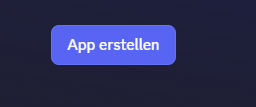
Trage einen Namen ein, zum Beispiel Community-Hangar. Der Name erscheint später als Name des Bots und bei der Anmeldung. Setze den Haken bei den Nutzungsbedingungen (das bestätigst du selbst) und klicke auf Erstellen.
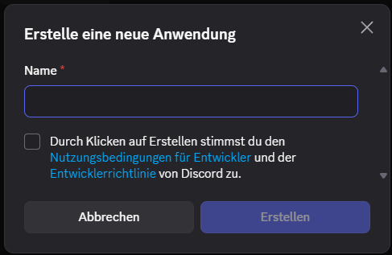
Es öffnet sich die Seite Allgemeine Informationen. Kopiere mit den Knöpfen Kopieren die Anwendungs-ID und den Öffentlichen Schlüssel in deine Textdatei. Das Feld „Interaktions-Endpunkt-URL“ bleibt noch leer, es kommt erst in Schritt 7 dran.
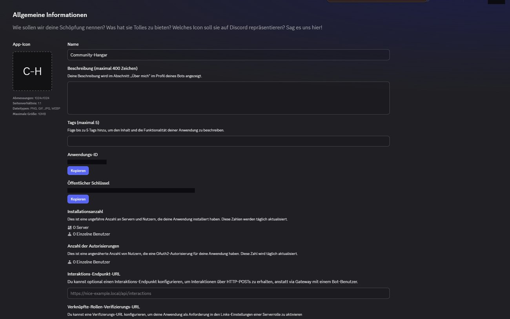
Öffne im Menü links OAuth2.
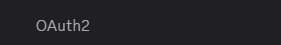
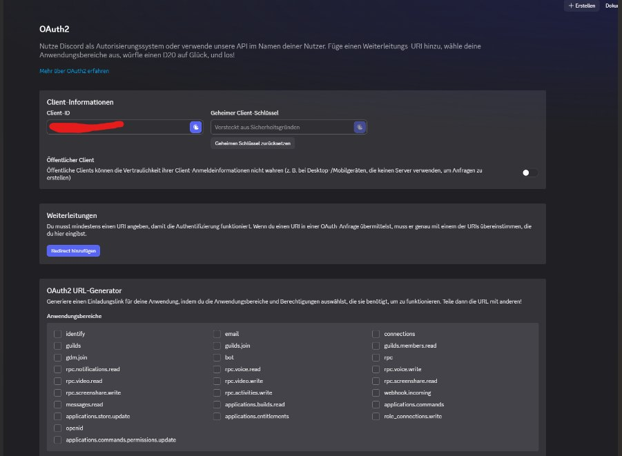
AUTH_DISCORD_SECRET.https://expg.mcdance.de/api/auth/callback/discord.
Die Adresse muss exakt so lauten, ohne Leerzeichen und ohne Schrägstrich am Ende. Statt expg.mcdance.de steht deine Adresse.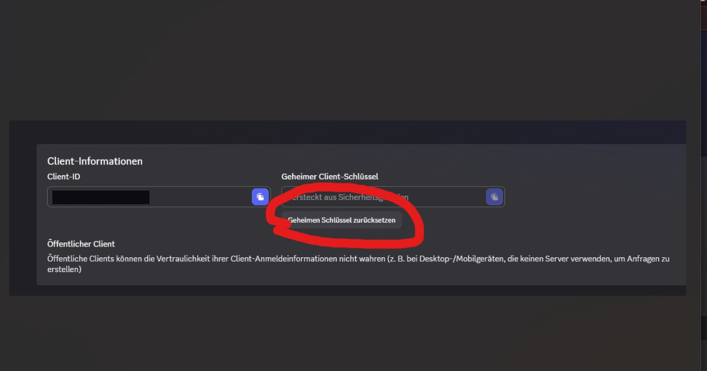
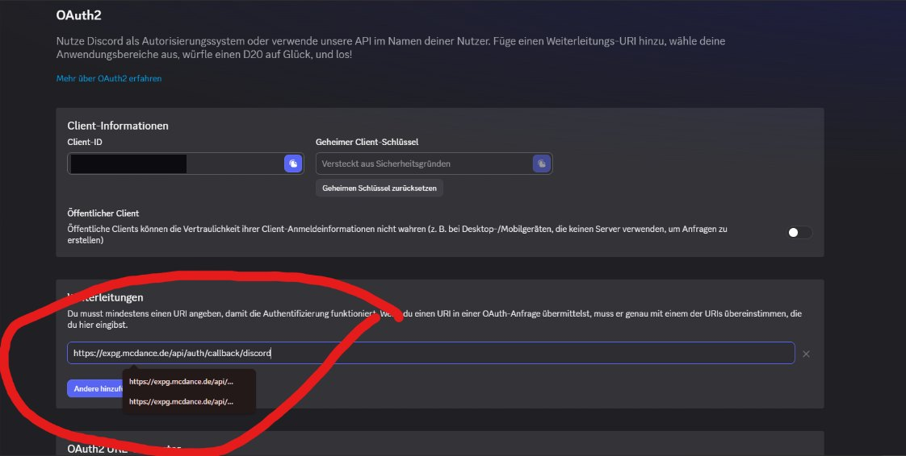
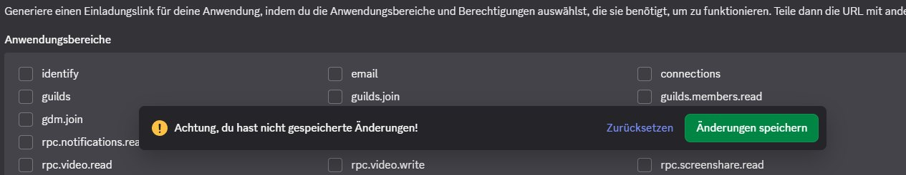
Bei einem privaten Bot verlangt Discord, dass es keinen Standard-Einladungslink gibt. Stelle das deshalb vor den Bot-Einstellungen ein. Sonst meldet das Portal beim Speichern des privaten Bots: „Private Anwendungen können keinen Standard-Autorisierungslink haben“.
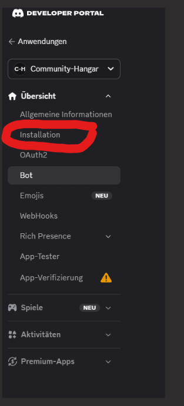
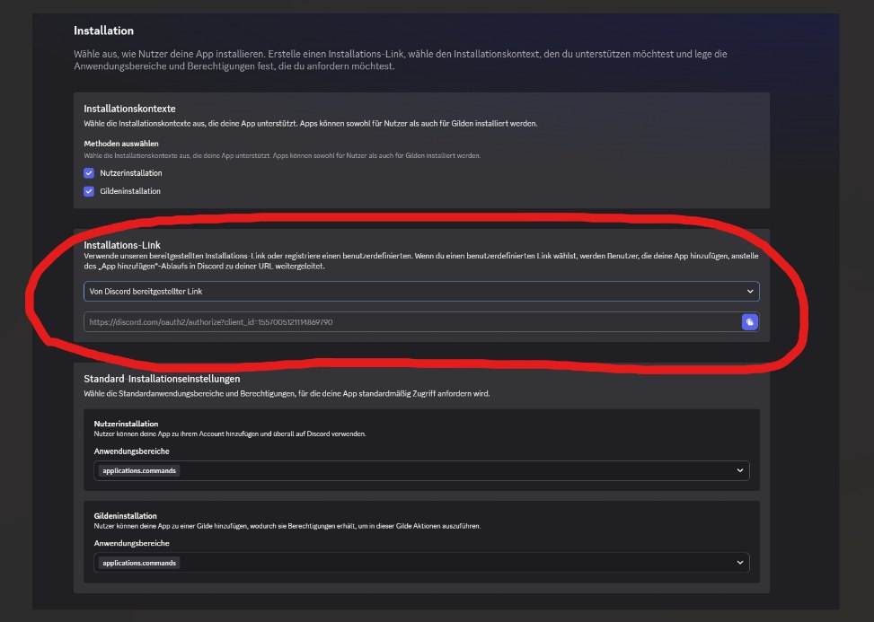
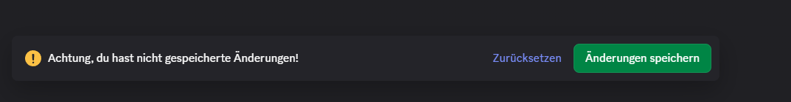
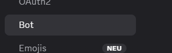
DISCORD_BOT_TOKEN.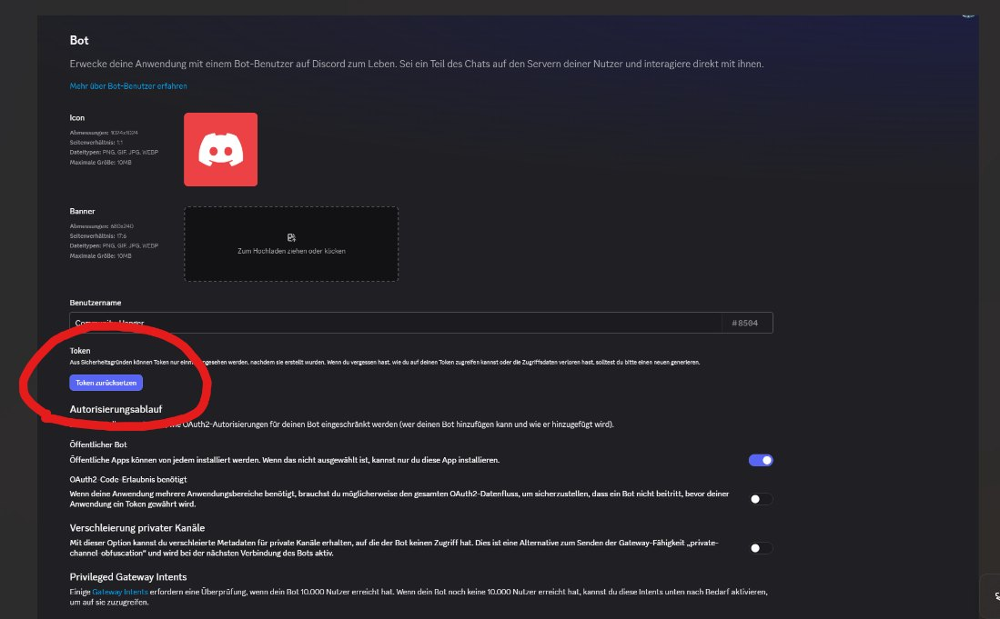
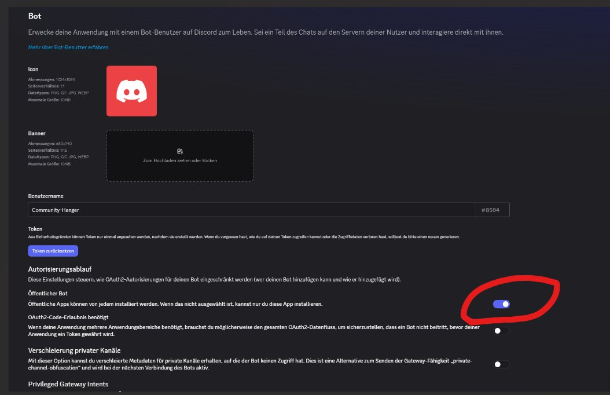
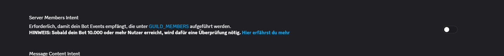
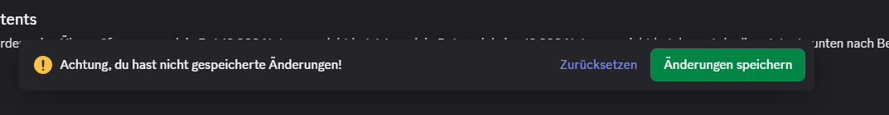
Zwei weitere Zahlen brauchst du aus Discord selbst. Schalte dazu in Discord unter Einstellungen → Erweitert den Entwicklermodus ein.
SERVER_ADMIN_DISCORD_ID, damit erhältst du Zugang zum Bereich „Server-Admin“): Rechtsklick auf dein Profil → Nutzer-ID kopieren.ONBOARDING_GUILD_IDS, nur dieser Server darf eine Orga anlegen): Rechtsklick auf den Server → Server-ID kopieren.Melde dich auf deinem Server an (wie das geht, weißt du selbst am besten) und gib die folgenden Befehle der Reihe nach ein.
mkdir -p ~/community-hangar && cd ~/community-hangar
mkdir -p ~/community-hangar legt den Ordner community-hangar in deinem Benutzerverzeichnis an. -p verhindert einen Fehler, falls es ihn schon gibt.&& führt den nächsten Befehl nur aus, wenn der erste geklappt hat.cd ~/community-hangar wechselt in diesen Ordner. Alle weiteren Befehle laufen dort.curl -O https://raw.githubusercontent.com/mackedanz/community-hangar-1/main/docker-compose.yml
curl lädt eine Datei aus dem Internet, -O speichert sie unter ihrem Namen. Die Datei beschreibt, welche Container Docker startet (die App und die Datenbank) und welche Daten sie behalten.
Fehlt curl („command not found“), installiere es mit sudo apt install curl.
curl -o .env https://raw.githubusercontent.com/mackedanz/community-hangar-1/main/.env.docker.example
-o .env (kleines o) speichert die Vorlage unter dem Namen .env. Diese Datei enthält später deine Einstellungen und Geheimnisse. Sie beginnt mit einem Punkt und ist deshalb
unsichtbar; ls -la zeigt sie.
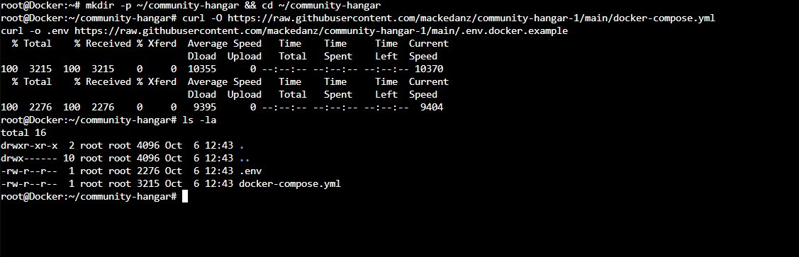
nano .env
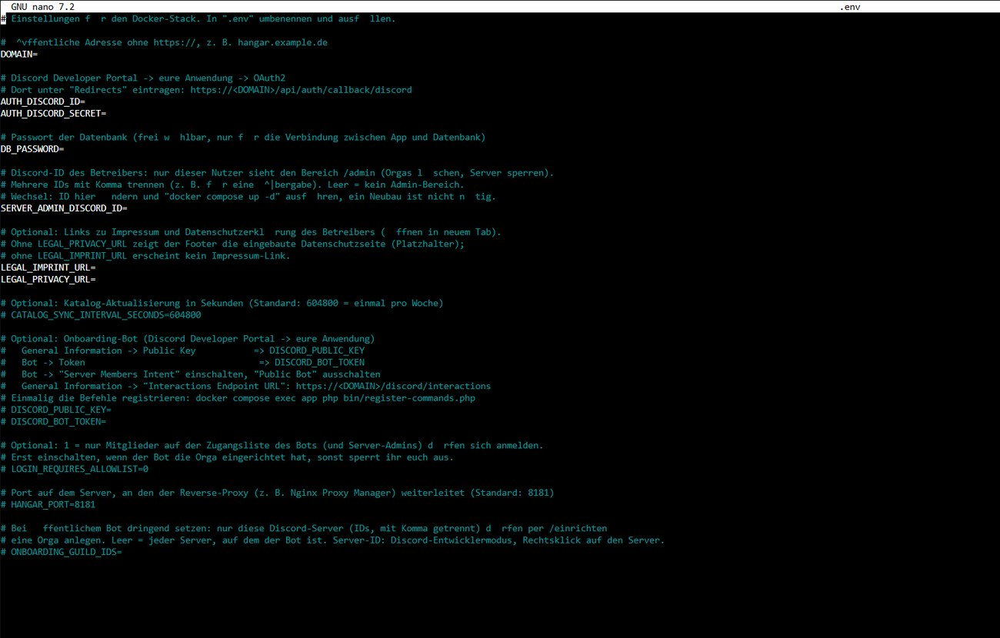
Vier Zeilen sind in der Vorlage auskommentiert (# am Anfang): DISCORD_PUBLIC_KEY, DISCORD_BOT_TOKEN, LOGIN_REQUIRES_ALLOWLIST und ONBOARDING_GUILD_IDS.
Entferne dort das #, sonst werden sie ignoriert.
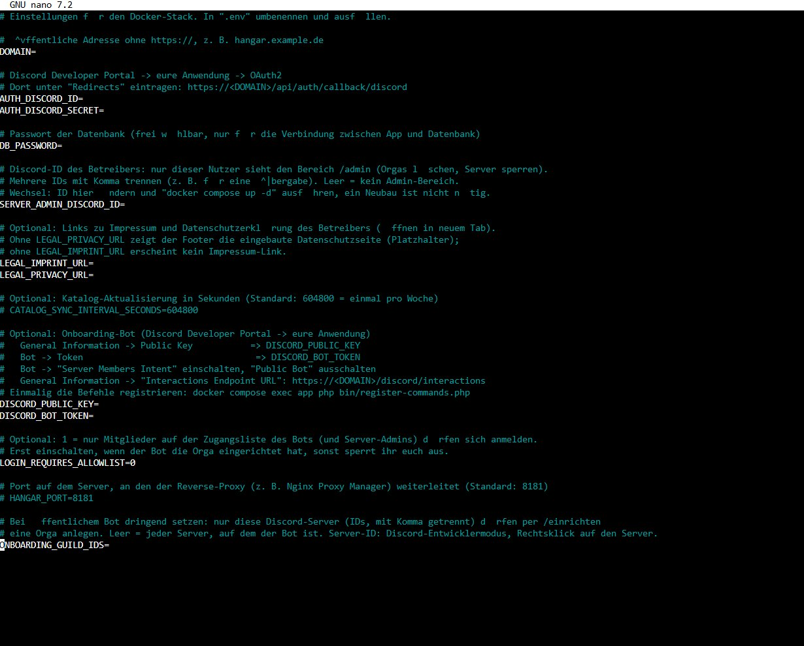
| Zeile | Wert |
|---|---|
DOMAIN= | deine Adresse ohne https://, z. B. expg.mcdance.de |
AUTH_DISCORD_ID= | Anwendungs-ID |
AUTH_DISCORD_SECRET= | Geheimer Client-Schlüssel |
DB_PASSWORD= | frei wählbar, lang und zufällig. Erzeugen mit: openssl rand -base64 24 | tr -d '/+=' |
SERVER_ADMIN_DISCORD_ID= | deine Discord-ID |
DISCORD_PUBLIC_KEY= | Öffentlicher Schlüssel |
DISCORD_BOT_TOKEN= | Bot-Token |
LOGIN_REQUIRES_ALLOWLIST= | 1: Nur wer auf der Zugangsliste des Bots steht (oder Server-Admin ist), darf sich anmelden |
ONBOARDING_GUILD_IDS= | Server-ID deines Discord-Servers |
Tipps zu nano: Mit den Pfeiltasten navigieren, die Maus funktioniert nicht. Zum Einfügen aus der Zwischenablage je nach Terminal Rechtsklick oder Strg+Umschalt+V.
Werte stehen direkt hinter dem =, ohne Leerzeichen und ohne Anführungszeichen. Speichern mit Strg+O und Enter, beenden mit Strg+X.
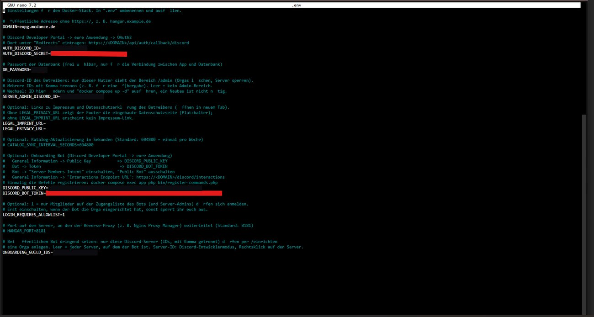
LOGIN_REQUIRES_ALLOWLIST=1 löscht jeder Abgleich der Mitgliederliste das Konto samt Hangar von allen,
die nicht mehr auf einer Zugangsliste stehen. Du selbst bist über SERVER_ADMIN_DISCORD_ID immer ausgenommen. Mit 0 ist die Sperre aus.
Als Bremse löscht ein Abgleich nichts, wenn auf einmal mindestens 5 Personen und mehr als die Hälfte der Liste wegfallen (die Meldung nennt das). Dann prüfst du die Liste und löschst bei Bedarf mit bin/purge-former-members.php --yes.Danach darf nur noch der Besitzer die Datei lesen. Der Befehl gibt bei Erfolg nichts aus.
chmod 600 .env
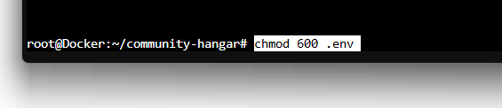
Mit diesem Befehl prüfst du, ob alle Zeilen gefüllt sind. Er zeigt von jedem Wert nur die ersten drei Zeichen:
sed -E 's/=(.{3}).*/=\1…/' .env | grep -v '^#' | grep -v '^$'
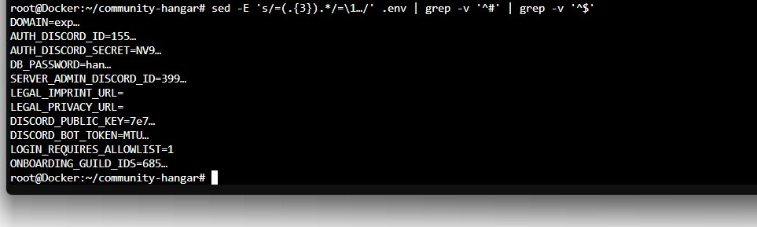
Die App spricht nur HTTP. Davor muss ein Reverse-Proxy HTTPS und das Zertifikat übernehmen. Die docker-compose.yml gibt dafür den Port 8181 auf dem Server frei
(änderbar mit HANGAR_PORT). Prüfe vorher, dass er frei ist: ss -ltn | grep 8181 (keine Ausgabe = frei).
Der Port hört standardmäßig auf allen Schnittstellen. Läuft der Proxy auf demselben Server, setze HANGAR_BIND=127.0.0.1 in der .env, dann ist die App nur noch über den Proxy erreichbar. Steht der Proxy auf einem anderen Rechner, erlaube Port 8181 per Firewall nur für dessen IP.
Hier der Weg mit dem Nginx Proxy Manager. Ohne eigenen Proxy findest du einen Hinweis in Kapitel 13.
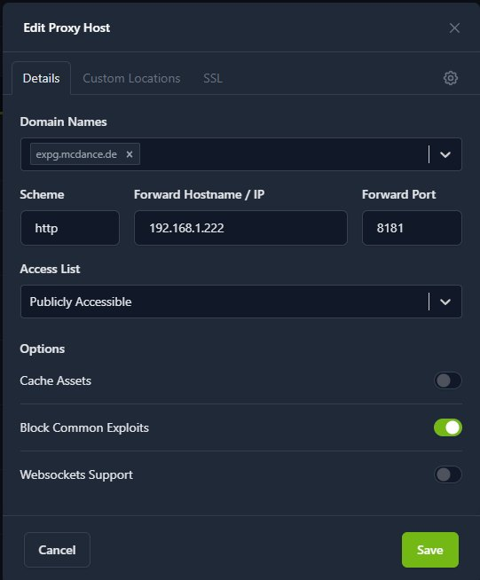
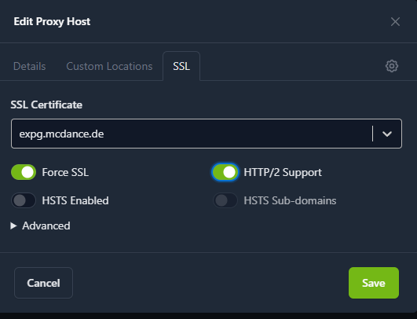
Bis der Container läuft, zeigt die Domain 502 Bad Gateway. Das ist normal.
docker compose up -d
Docker legt Netzwerk, Volumes und Container an. „Waiting“ bei der Datenbank ist normal, die App startet, sobald sie bereit ist.
Die Volumes db-data (Datenbank) und ship-images (Schiffsbilder) sind die dauerhaften Daten.
Beim ersten Mal lädt Docker außerdem die Images herunter, das dauert deutlich länger.
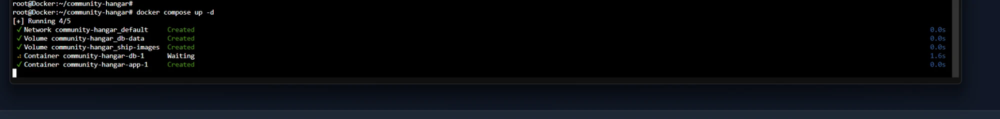
docker compose logs --tail 40 app
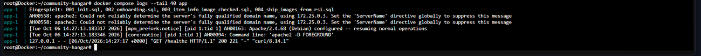
Nach etwa 20 Sekunden beginnt im Hintergrund der Abgleich des Schiffskatalogs aus der RSI Ship Matrix (ein bis zwei Minuten).
docker compose pull && docker compose up -d
pull holt die neueste Version des Images, up -d startet die Container damit neu. && führt den zweiten Befehl nur aus, wenn der erste geklappt hat.
Das nutzt du auch später für jedes Update. Die Datenbank bleibt dabei erhalten.
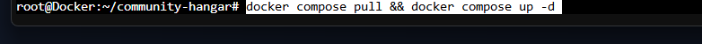
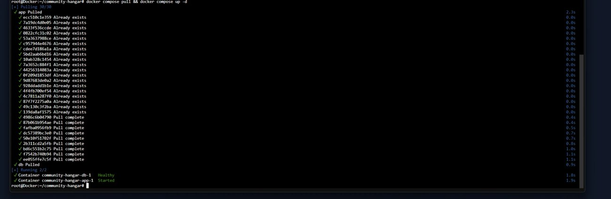
Öffne im Browser https://expg.mcdance.de/healthz. Dort muss ok stehen. Erst wenn das klappt, geht es mit Discord weiter.
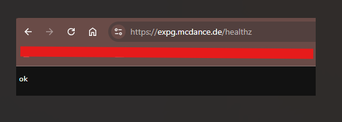
Im Developer Portal: Allgemeine Informationen → Interaktions-Endpunkt-URL. Trage ein (statt expg.mcdance.de deine Adresse) und speichere:
https://expg.mcdance.de/discord/interactions
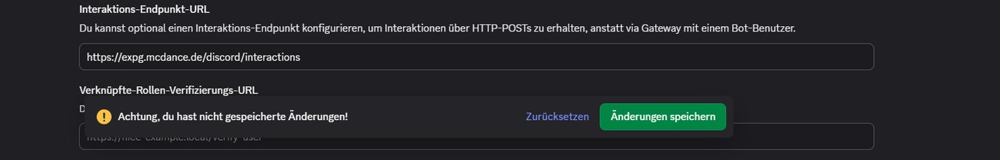
Beim Speichern schickt Discord eine Testanfrage an deinen Server. Klappt sie, erscheint die grüne Meldung:
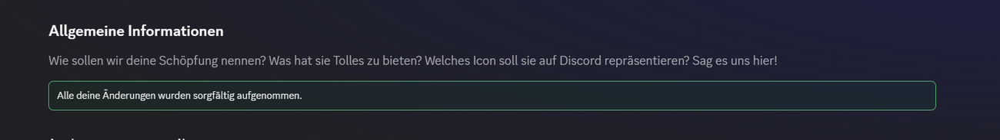
Meldet das Portal einen Fehler, ist meist DISCORD_PUBLIC_KEY falsch oder die Seite nicht erreichbar (Kapitel 6 prüfen). Nach jeder Änderung an der .env gilt: docker compose up -d.
docker compose exec app php bin/register-commands.php
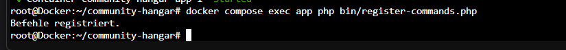
Öffne diesen Link im Browser und ersetze <DEINE CLIENT-ID> durch deine eigene ID:
https://discord.com/oauth2/authorize?client_id=<DEINE CLIENT-ID>&scope=bot%20applications.commands&permissions=0
Die Client-ID findest du im Developer Portal unter OAuth2 im Feld Client-ID. Das ist dieselbe Zahl wie die Anwendungs-ID.
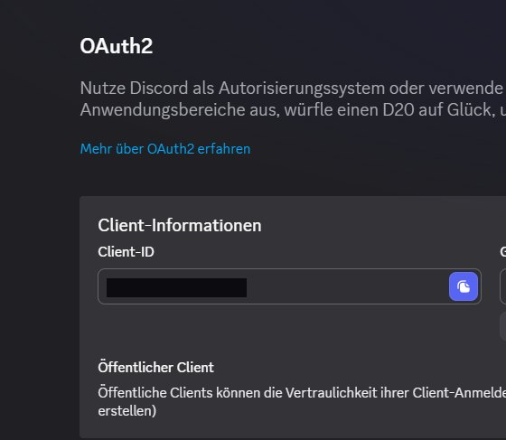
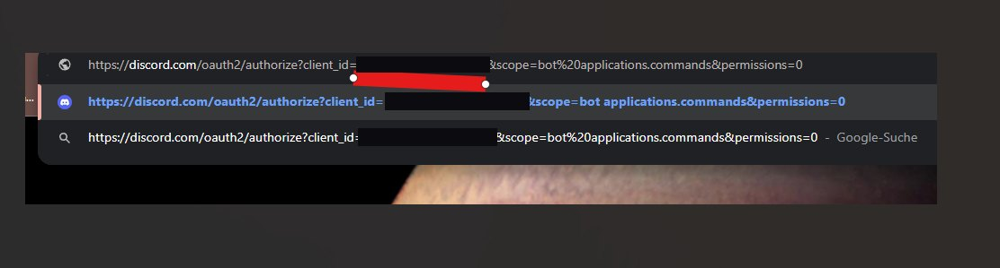
Der Bot braucht keine Rechte (permissions=0), nur zwei Zugriffe: Bot hinzufügen und Befehle erstellen. Wähle im Dropdown deinen Server.
Es erscheinen nur Server, auf denen du das Recht „Server verwalten“ hast. Wähle den Server, dessen ID du in ONBOARDING_GUILD_IDS eingetragen hast.
Eine eventuelle Captcha-Abfrage bestätigst du selbst.
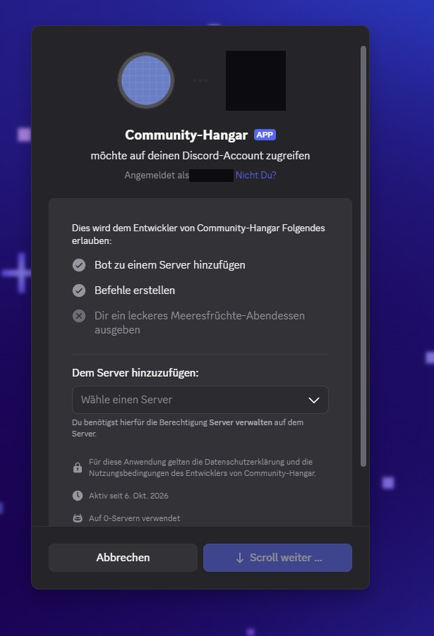
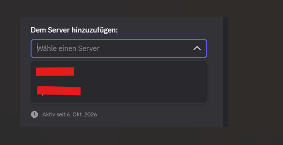
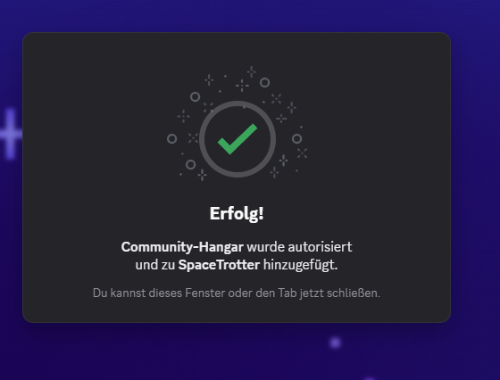
Der Bot erscheint in der Mitgliederliste des Servers (online oder offline, beides ist in Ordnung). Er antwortet nur auf Befehle.
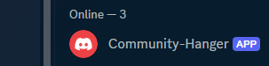
Tippe in Discord in einem beliebigen Kanal /einrichten (als Admin oder mit „Server verwalten“). Erscheint der Befehl nicht, lade Discord mit Strg+R neu; es kann ein paar Minuten dauern.
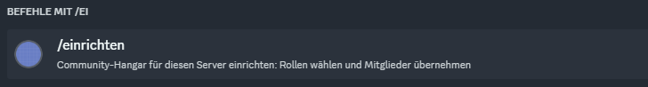
Es erscheint eine Nachricht, die nur du siehst. Die Orga wird mit dem Servernamen angelegt, du stehst automatisch auf der Zugangsliste.
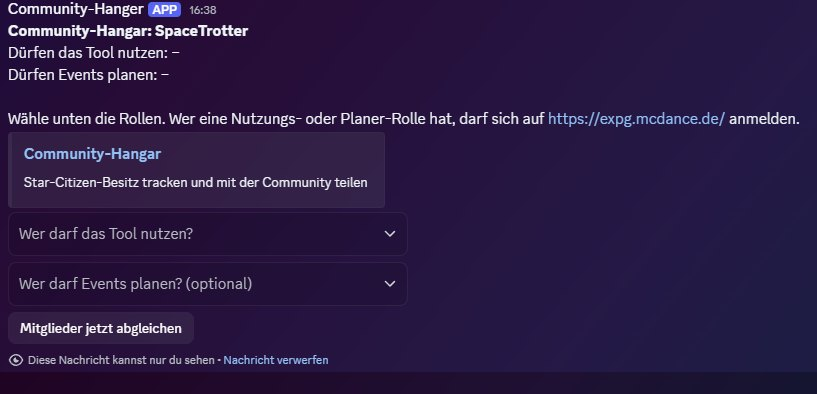
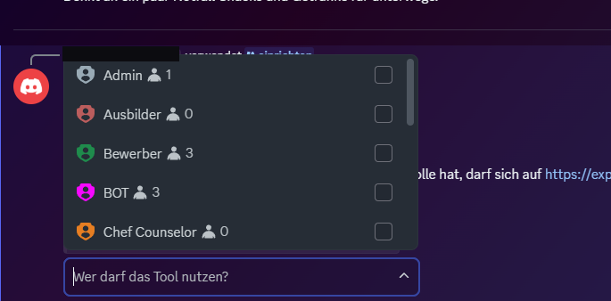
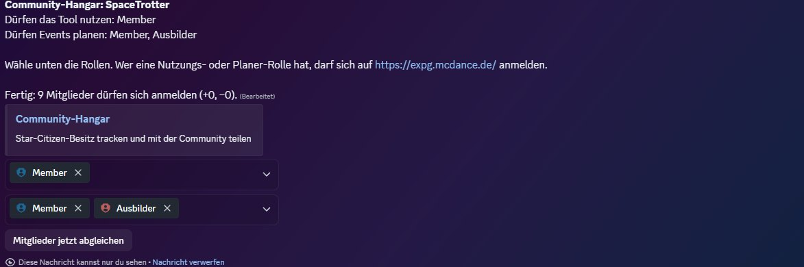
Der Befehl lässt sich beliebig oft wiederholen. Der Bot gleicht außerdem automatisch einmal pro Stunde ab. Wer die Rolle bekommt, darf sich anmelden. Wer sie verliert, darf es nicht mehr
(laufende Sitzungen enden sofort, sein Konto wird gelöscht). Mit /abgleichen kann jede Person mit einer Nutzungs-Rolle (und jeder Server-Admin) sofort abgleichen.
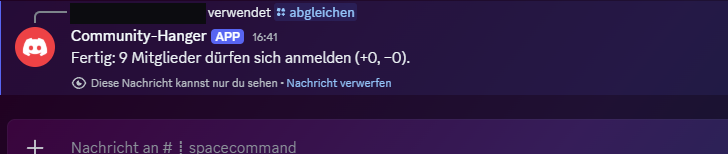
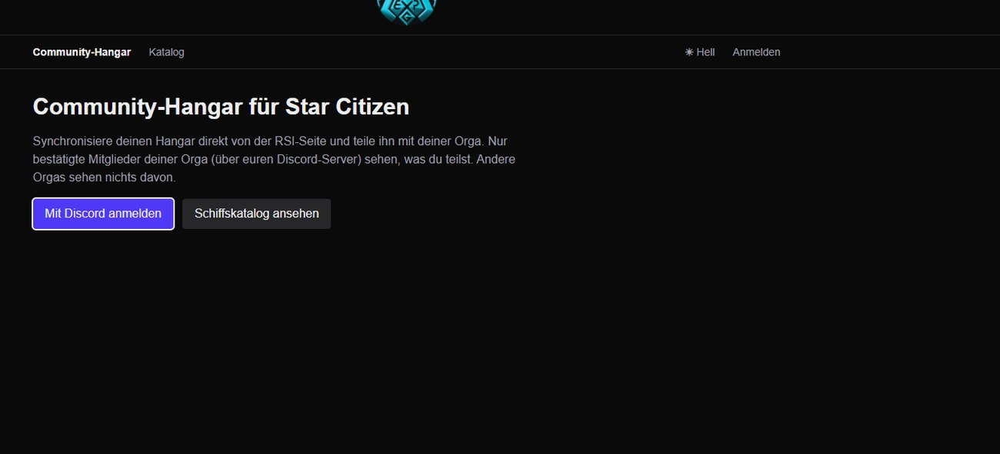
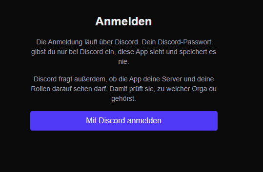
Discord zeigt eine Abfrage. Sie nennt drei Zugriffe: Benutzername, Avatar und Banner, auf welchen Servern du bist, und deine Mitgliedsinformationen (Nickname, Avatar, Rollen). Damit prüft die App, zu welcher Orga du gehörst. Scrolle nach unten, bis „Autorisieren“ aktiv wird, und bestätige selbst.
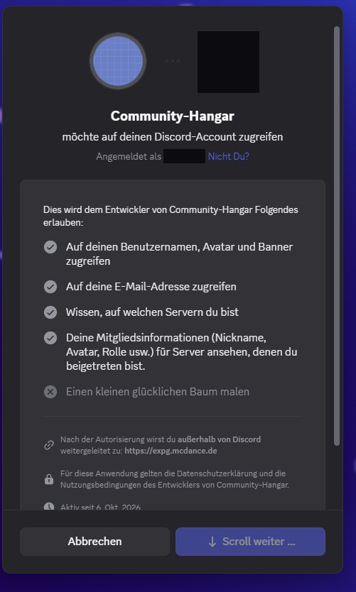
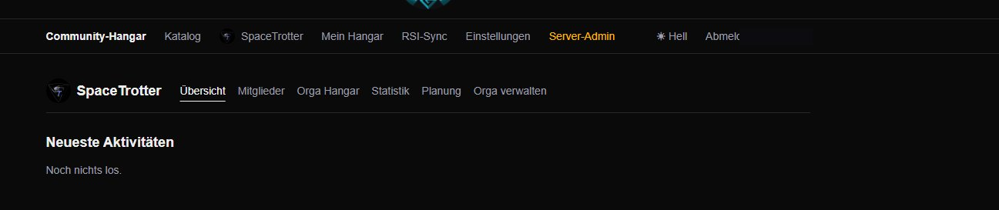
Ein Mitglied ohne Rolle sieht stattdessen: „Dieses Discord-Konto steht nicht auf der Zugangsliste.“
Jedes Mitglied überträgt seinen Hangar von der RSI-Seite. Öffne oben RSI-Sync.
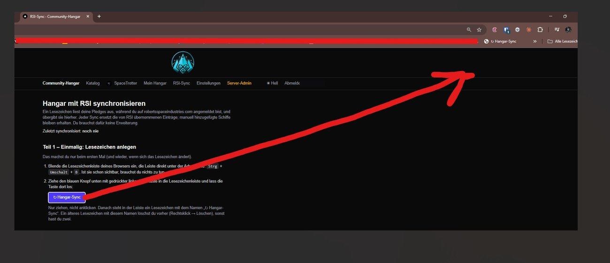
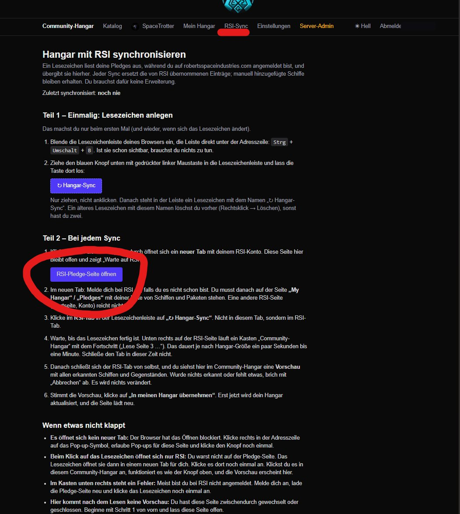
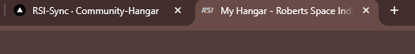
| Aufgabe | Befehl |
|---|---|
| Neue Version holen | docker compose pull && docker compose up -d |
| Logs ansehen | docker compose logs -f app |
| Katalog sofort abgleichen | docker compose exec app php bin/catalog-sync.php |
| Zugangslisten sofort abgleichen | docker compose exec app php bin/sync-allowlist.php |
Konten ohne Zugangsliste löschen (Vorschau, mit --yes wirklich) | docker compose exec app php bin/purge-former-members.php |
| Schiffsbilder vorab laden | docker compose exec app php bin/warm-images.php |
| Datenbank sichern | docker compose exec db sh -c 'mariadb-dump -u hangar -p"$MARIADB_PASSWORD" hangar' > sicherung.sql |
| Stoppen (Daten bleiben) | docker compose down |
| Alles löschen (Neuinstallation) | docker compose down -v löscht auch Datenbank und Bilder |
Gesichert werden sollte die Datenbank. Die Bilder lädt die App bei Bedarf selbst nach.
docker-compose.yml eine Datei docker-compose.override.yml an (Docker liest sie automatisch mit):services:
caddy:
image: caddy:2-alpine
restart: unless-stopped
command: caddy reverse-proxy --from ${DOMAIN} --to app:80
ports:
- "80:80"
- "443:443"
volumes:
- caddy-data:/data
volumes:
caddy-data:
Dann docker compose up -d. Den Reverse-Proxy aus Kapitel 5 brauchst du in diesem Fall nicht.
| Symptom | Ursache und Lösung |
|---|---|
| Portal: „Private Anwendungen können keinen Standard-Autorisierungslink haben“ | Unter Installation den Installations-Link auf Keine stellen (Kapitel 2.4), dann den Bot erneut privat speichern. |
| Container startet ständig neu („Restarting“) | docker compose logs --tail 40 app lesen. Die Meldung nennt den Grund, z. B. „Fehlende Einstellungen“ (Wert in der .env fehlt). |
| „Datenbank nicht erreichbar“ nach Passwortänderung | DB_PASSWORD wurde nach dem ersten Start geändert. Die Datenbank behält das erste Passwort: das alte wieder eintragen, oder bei leeren Daten docker compose down -v und neu starten. |
/healthz zeigt „502 Bad Gateway“ | Der Proxy erreicht die App nicht: Port, IP und Schema http im Proxy-Host prüfen, docker compose ps (läuft app?). |
| Discord meldet „Invalid redirect_uri“ | Die Redirect-Adresse im Portal muss genau https://<DOMAIN>/api/auth/callback/discord lauten und gespeichert sein. |
| Discord meldet „client_id … snowflake“ | AUTH_DISCORD_ID fehlt oder ist leer. |
| Portal lehnt die Endpunkt-URL ab | DISCORD_PUBLIC_KEY prüfen (Zeile ohne #?), Seite von außen erreichbar? Nach .env-Änderung docker compose up -d. |
/einrichten erscheint nicht | Befehle registrieren (Kapitel 8), Bot eingeladen (Kapitel 9)? Discord mit Strg+R neu laden, es kann ein paar Minuten dauern. |
| „Die Anwendung reagiert nicht“ | Die Interaktions-Endpunkt-URL fehlt im Portal oder ist falsch (Kapitel 7). docker compose logs app | grep interactions zeigt, ob Anfragen ankommen. |
| „Der Bot darf die Mitgliederliste nicht lesen“ | Im Portal unter Bot den Server Members Intent einschalten und speichern. |
| „Dieser Server ist nicht freigeschaltet“ | Die Server-ID in ONBOARDING_GUILD_IDS eintragen, dann docker compose up -d. Prüfe, dass du beim Einladen den richtigen Server gewählt hast. |
| Anmeldung: „nicht auf der Zugangsliste“ | Die Person hat keine der gewählten Rollen, oder der Abgleich lief noch nicht (/abgleichen). Du selbst kommst über SERVER_ADMIN_DISCORD_ID immer herein. |
| Es öffnet sich kein neuer RSI-Tab | Der Browser hat das Öffnen blockiert. Pop-ups für die Seite erlauben (Symbol rechts in der Adresszeile) und den Knopf noch einmal klicken. |
| In der App kommt nach dem Lesen keine Vorschau | Du hast die App-Seite zwischendurch gewechselt oder geschlossen. Beginne mit Schritt 1 des Syncs von vorn und lass die App-Seite offen. Prüfe außerdem, dass du das Lesezeichen von deiner Instanz gezogen hast und kein altes auf eine andere Adresse zeigt. |
| Im Fortschrittskasten steht ein Fehler | Meist bist du bei RSI nicht angemeldet. Melde dich an, lade die Pledge-Seite neu und klicke das Lesezeichen noch einmal. |
| Katalog leer | docker compose exec app php bin/catalog-sync.php und die Ausgabe lesen (RSI-Server erreichbar?). |
| Schiffsbilder fehlen anfangs | Normal: Die App lädt sie beim ersten Anzeigen von RSI. Mit bin/warm-images.php vorab laden. |